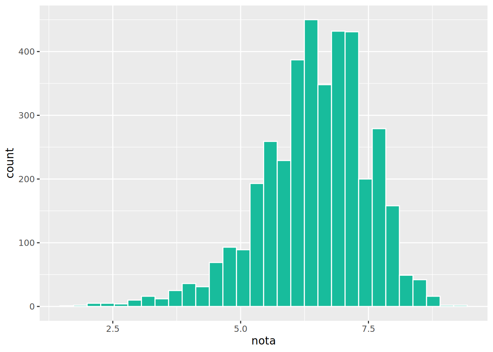
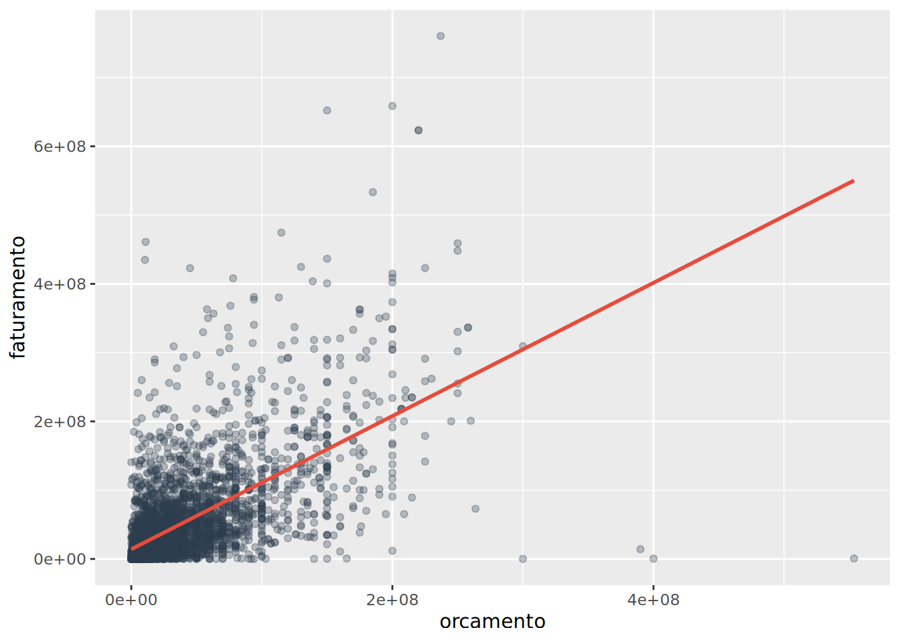
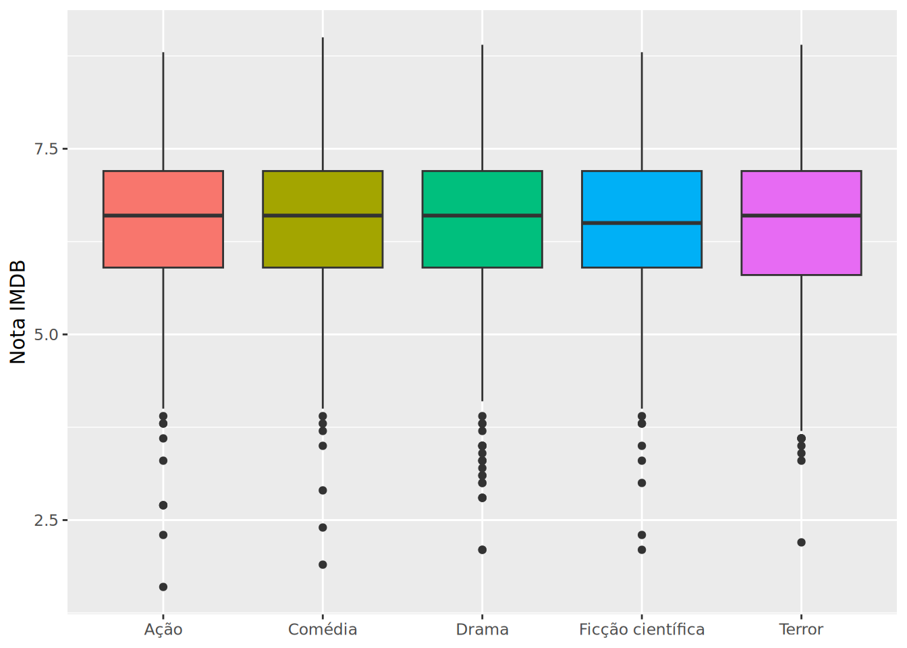

library(dplyr)
library(ggplot2)
library(readr)
library(tidyr)
library(stringr)
library(forcats)
library(purrr)
library(tibble)
# CSV com vírgula como separador (padrão americano)
filmes <- read_csv2("../data/filmes_imdb.csv")
# Se o arquivo usar ponto-e-vírgula (comum no Brasil)
# filmes <- read_csv2("../data/filmes_imdb.csv")Dia 1 — Tarde
Dia 1 — Tarde | 4 horas
Objetivos
Ao final deste capítulo, você será capaz de:
- Importar dados de arquivos CSV
- Filtrar, selecionar, transformar e resumir dados com
dplyr - Usar o pipe (
%>%) para encadear operações - Criar seus primeiros gráficos com
ggplot2
Importando dados
Tudo começa com a importação. O pacote readr (parte do tidyverse) oferece funções rápidas e consistentes para ler arquivos:
Rows: 3,875
Columns: 10
$ codigo_filme <dbl> 1, 2, 3, 4, 5, 6, 7, 8, 9, 10, 11, 12, 13, 14, 15, 16…
$ titulo <chr> "Avatar ", "Pirates of the Caribbean: At World's End …
$ diretor <chr> "James Cameron", "Gore Verbinski", "Sam Mendes", "Chr…
$ ano <dbl> 2009, 2007, 2015, 2012, 2012, 2007, 2010, 2015, 2009,…
$ genero <chr> "Ação", "Aventura", "Comédia", "Mistério", "Fantasia"…
$ duracao <dbl> 81, 126, 88, 99, 92, 95, 39, 111, 82, 89, 77, 102, 98…
$ orcamento <dbl> 237000000, 300000000, 245000000, 250000000, 263700000…
$ faturamento <dbl> 760505847, 309404152, 200074175, 448130642, 73058679,…
$ nota <dbl> 7.9, 7.1, 6.8, 8.5, 6.6, 6.2, 7.8, 7.5, 7.5, 6.9, 6.1…
$ elenco_principal <chr> "Viola Davis", "Cate Blanchett", "Natalie Portman", "…Temos 4826 filmes com 11 colunas: título, ano, nota, orçamento, faturamento, gênero, diretor, duração, etc.
O pipe: %>%
O pipe (%>%) é o encadeamento de operações. Em vez de aninhar funções ou criar objetos intermediários, você conecta os passos com %>%:
# A tibble: 5 × 2
genero nota_media
<chr> <dbl>
1 Musical 6.70
2 Esporte 6.59
3 Aventura 6.55
4 Guerra 6.52
5 Biografia 6.51# A tibble: 5 × 2
genero nota_media
<chr> <dbl>
1 Musical 6.70
2 Esporte 6.59
3 Aventura 6.55
4 Guerra 6.52
5 Biografia 6.51
TipAtalho do pipe
Ctrl + Shift + M (Windows/Linux) ou Cmd + Shift + M (Mac). Grave esse atalho — você vai usá-lo centenas de vezes por dia!
Os 6 verbos do dplyr
O dplyr é baseado em seis funções principais (verbos) que cobrem a maioria das operações com tabelas:
| Verbo | O que faz | Equivalente mental |
|---|---|---|
filter() |
Filtra linhas | “Quero só esses…” |
select() |
Seleciona colunas | “Só me interessa…” |
mutate() |
Cria/modifica colunas | “Calcula pra mim…” |
arrange() |
Ordena linhas | “Organiza por…” |
summarise() |
Resume em um número | “Resume isso…” |
group_by() |
Agrupa para operações | “Para cada…” |
filter() — Filtrar linhas
Filtra linhas com base em condições lógicas:
# A tibble: 4 × 10
codigo_filme titulo diretor ano genero duracao orcamento faturamento nota
<dbl> <chr> <chr> <dbl> <chr> <dbl> <dbl> <dbl> <dbl>
1 65 The Dar… Christ… 2008 Avent… 151 185000000 533316061 9
2 1807 The Sha… Frank … 1994 Fanta… 104 25000000 28341469 9.3
3 2563 The God… Franci… 1974 Coméd… 45 13000000 57300000 9
4 3035 The God… Franci… 1972 Crime 131 6000000 134821952 9.2
# ℹ 1 more variable: elenco_principal <chr># A tibble: 21 × 10
codigo_filme titulo diretor ano genero duracao orcamento faturamento nota
<dbl> <chr> <chr> <dbl> <chr> <dbl> <dbl> <dbl> <dbl>
1 17 The Av… Joss W… 2012 Ação 53 220000000 623279547 8.1
2 95 Incept… Christ… 2010 Ação 103 160000000 292568851 8.8
3 564 Inglou… Quenti… 2009 Ação 108 75000000 120523073 8.3
4 776 Deadpo… Tim Mi… 2016 Ação 123 58000000 363024263 8.1
5 1026 Prison… Denis … 2013 Ação 101 46000000 60962878 8.1
6 1232 Amélie Jean-P… 2001 Ação 55 77000000 33201661 8.4
7 1341 L.A. C… Curtis… 1997 Ação 89 35000000 64604977 8.3
8 1775 Goodfe… Martin… 1990 Ação 118 25000000 46836394 8.7
9 1778 Scarfa… Brian … 1983 Ação 96 25000000 44700000 8.3
10 2034 Spotli… Tom Mc… 2015 Ação 96 20000000 44988180 8.1
# ℹ 11 more rows
# ℹ 1 more variable: elenco_principal <chr># A tibble: 162 × 10
codigo_filme titulo diretor ano genero duracao orcamento faturamento nota
<dbl> <chr> <chr> <dbl> <chr> <dbl> <dbl> <dbl> <dbl>
1 3 Spectr… Sam Me… 2015 Coméd… 88 245000000 200074175 6.8
2 4 The Da… Christ… 2012 Misté… 99 250000000 448130642 8.5
3 5 John C… Andrew… 2012 Fanta… 92 263700000 73058679 6.6
4 7 Tangle… Nathan… 2010 Terror 39 260000000 200807262 7.8
5 8 Avenge… Joss W… 2015 Misté… 111 250000000 458991599 7.5
6 10 Batman… Zack S… 2016 Terror 89 250000000 330249062 6.9
7 14 The Lo… Gore V… 2013 Ficçã… 129 215000000 89289910 6.5
8 15 Man of… Zack S… 2013 Drama 123 225000000 291021565 7.2
9 17 The Av… Joss W… 2012 Ação 53 220000000 623279547 8.1
10 18 Pirate… Rob Ma… 2011 Drama 113 250000000 241063875 6.7
# ℹ 152 more rows
# ℹ 1 more variable: elenco_principal <chr>Operadores úteis no filter():
# A tibble: 2 × 2
genero n
<chr> <int>
1 Drama 719
2 Comédia 452# A tibble: 36 × 10
codigo_filme titulo diretor ano genero duracao orcamento faturamento nota
<dbl> <chr> <chr> <dbl> <chr> <dbl> <dbl> <dbl> <dbl>
1 4 The Da… Christ… 2012 Misté… 99 250000000 448130642 8.5
2 17 The Av… Joss W… 2012 Ação 53 220000000 623279547 8.1
3 47 X-Men:… Bryan … 2014 Ação 126 200000000 233914986 8
4 77 Inside… Pete D… 2015 Coméd… 113 175000000 356454367 8.3
5 93 Guardi… James … 2014 Coméd… 118 170000000 333130696 8.1
6 94 Inters… Christ… 2014 Roman… 90 165000000 187991439 8.6
7 125 Mad Ma… George… 2015 Coméd… 61 150000000 153629485 8.1
8 175 The Re… Alejan… 2015 Roman… 91 135000000 183635922 8.1
9 216 Life o… Ang Lee 2012 Thril… 123 120000000 124976634 8
10 269 The Ma… Ridley… 2015 Drama 78 108000000 228430993 8.1
# ℹ 26 more rows
# ℹ 1 more variable: elenco_principal <chr>select() — Selecionar colunas
# A tibble: 3,875 × 3
titulo ano nota
<chr> <dbl> <dbl>
1 Avatar 2009 7.9
2 Pirates of the Caribbean: At World's End 2007 7.1
3 Spectre 2015 6.8
4 The Dark Knight Rises 2012 8.5
5 John Carter 2012 6.6
6 Spider-Man 3 2007 6.2
7 Tangled 2010 7.8
8 Avengers: Age of Ultron 2015 7.5
9 Harry Potter and the Half-Blood Prince 2009 7.5
10 Batman v Superman: Dawn of Justice 2016 6.9
# ℹ 3,865 more rows# A tibble: 3,875 × 8
titulo diretor ano genero duracao orcamento faturamento nota
<chr> <chr> <dbl> <chr> <dbl> <dbl> <dbl> <dbl>
1 Avatar James … 2009 Ação 81 237000000 760505847 7.9
2 Pirates of the Cari… Gore V… 2007 Avent… 126 300000000 309404152 7.1
3 Spectre Sam Me… 2015 Coméd… 88 245000000 200074175 6.8
4 The Dark Knight Ris… Christ… 2012 Misté… 99 250000000 448130642 8.5
5 John Carter Andrew… 2012 Fanta… 92 263700000 73058679 6.6
6 Spider-Man 3 Sam Ra… 2007 Drama 95 258000000 336530303 6.2
7 Tangled Nathan… 2010 Terror 39 260000000 200807262 7.8
8 Avengers: Age of Ul… Joss W… 2015 Misté… 111 250000000 458991599 7.5
9 Harry Potter and th… David … 2009 Ficçã… 82 250000000 301956980 7.5
10 Batman v Superman: … Zack S… 2016 Terror 89 250000000 330249062 6.9
# ℹ 3,865 more rows# A tibble: 3,875 × 8
titulo ano genero duracao orcamento faturamento nota elenco_principal
<chr> <dbl> <chr> <dbl> <dbl> <dbl> <dbl> <chr>
1 Avatar 2009 Ação 81 237000000 760505847 7.9 Viola Davis
2 Pirates of… 2007 Avent… 126 300000000 309404152 7.1 Cate Blanchett
3 Spectre 2015 Coméd… 88 245000000 200074175 6.8 Natalie Portman
4 The Dark K… 2012 Misté… 99 250000000 448130642 8.5 Cate Blanchett
5 John Carte… 2012 Fanta… 92 263700000 73058679 6.6 Tom Hanks
6 Spider-Man… 2007 Drama 95 258000000 336530303 6.2 Viola Davis
7 Tangled 2010 Terror 39 260000000 200807262 7.8 Viola Davis
8 Avengers: … 2015 Misté… 111 250000000 458991599 7.5 Robert De Niro
9 Harry Pott… 2009 Ficçã… 82 250000000 301956980 7.5 Natalie Portman
10 Batman v S… 2016 Terror 89 250000000 330249062 6.9 Tom Hanks
# ℹ 3,865 more rows# A tibble: 3,875 × 1
codigo_filme
<dbl>
1 1
2 2
3 3
4 4
5 5
6 6
7 7
8 8
9 9
10 10
# ℹ 3,865 more rows# A tibble: 3,875 × 2
orcamento faturamento
<dbl> <dbl>
1 237000000 760505847
2 300000000 309404152
3 245000000 200074175
4 250000000 448130642
5 263700000 73058679
6 258000000 336530303
7 260000000 200807262
8 250000000 458991599
9 250000000 301956980
10 250000000 330249062
# ℹ 3,865 more rowsmutate() — Criar ou modificar colunas
A função mutate() calcula novas colunas a partir das existentes:
# A tibble: 3,875 × 5
titulo orcamento faturamento lucro_milhoes duracao_horas
<chr> <dbl> <dbl> <dbl> <dbl>
1 Avatar 237000000 760505847 524. 1.35
2 Pirates of the Caribbean: … 300000000 309404152 9.40 2.1
3 Spectre 245000000 200074175 -44.9 1.47
4 The Dark Knight Rises 250000000 448130642 198. 1.65
5 John Carter 263700000 73058679 -191. 1.53
6 Spider-Man 3 258000000 336530303 78.5 1.58
7 Tangled 260000000 200807262 -59.2 0.65
8 Avengers: Age of Ultron 250000000 458991599 209. 1.85
9 Harry Potter and the Half-… 250000000 301956980 52.0 1.37
10 Batman v Superman: Dawn of… 250000000 330249062 80.2 1.48
# ℹ 3,865 more rows# A tibble: 5 × 2
titulo lucro
<chr> <dbl>
1 Avatar 523505847
2 Jurassic World 502177271
3 Titanic 458672302
4 Star Wars: Episode IV - A New Hope 449935665
5 E.T. the Extra-Terrestrial 424449459# A tibble: 5 × 3
titulo nota nota_z
<chr> <dbl> <dbl>
1 The Shawshank Redemption 9.3 2.69
2 The Godfather 9.2 2.60
3 The Dark Knight 9 2.41
4 The Godfather: Part II 9 2.41
5 The Lord of the Rings: The Return of the King 8.9 2.31arrange() — Ordenar
# A tibble: 5 × 2
titulo nota
<chr> <dbl>
1 Justin Bieber: Never Say Never 1.6
2 Disaster Movie 1.9
3 Superbabies: Baby Geniuses 2 1.9
4 Who's Your Caddy? 2
5 From Justin to Kelly 2.1# A tibble: 5 × 2
titulo nota
<chr> <dbl>
1 The Shawshank Redemption 9.3
2 The Godfather 9.2
3 The Dark Knight 9
4 The Godfather: Part II 9
5 The Lord of the Rings: The Return of the King 8.9# A tibble: 10 × 3
genero titulo nota
<chr> <chr> <dbl>
1 Animação Schindler's List 8.9
2 Animação The Lord of the Rings: The Fellowship of the Ring 8.8
3 Animação The Lord of the Rings: The Two Towers 8.7
4 Animação One Flew Over the Cuckoo's Nest 8.7
5 Animação Jurassic Park 8.1
6 Animação The Sixth Sense 8.1
7 Animação Platoon 8.1
8 Animação JFK 8
9 Animação Winged Migration 8
10 Animação The Hangover 7.8summarise() e group_by() — Resumir e agrupar
Juntos, group_by() e summarise() são a dupla mais poderosa do dplyr:
# A tibble: 1 × 5
nota_media nota_desvio nota_min nota_max n
<dbl> <dbl> <dbl> <dbl> <int>
1 6.46 1.05 1.6 9.3 3875# A tibble: 19 × 3
genero nota_media n
<chr> <dbl> <int>
1 Musical 6.75 39
2 Esporte 6.73 16
3 História 6.56 31
4 Guerra 6.55 33
5 Biografia 6.50 121
6 Comédia 6.50 452
7 Ação 6.49 566
8 Drama 6.48 719
9 Romance 6.48 245
10 Documentário 6.47 117
11 Ficção científica 6.47 306
12 Fantasia 6.47 82
13 Mistério 6.46 113
14 Aventura 6.45 204
15 Thriller 6.41 185
16 Terror 6.40 311
17 Crime 6.39 193
18 Animação 6.29 114
19 Família 6.1 28# A tibble: 10 × 3
ano orcamento_medio n
<dbl> <dbl> <int>
1 2016 66007647. 68
2 2015 53006627. 139
3 2013 49385475. 171
4 2014 48291950. 159
5 2012 47744328. 166
6 2010 47258132. 174
7 2008 44004546. 183
8 2011 42996023. 175
9 2009 41423690. 187
10 2005 40487560. 186count() — Atalho para frequência
# A tibble: 19 × 2
genero n
<chr> <int>
1 Drama 719
2 Ação 566
3 Comédia 452
4 Terror 311
5 Ficção científica 306
6 Romance 245
7 Aventura 204
8 Crime 193
9 Thriller 185
10 Biografia 121
11 Documentário 117
12 Animação 114
13 Mistério 113
14 Fantasia 82
15 Musical 39
16 Guerra 33
17 História 31
18 Família 28
19 Esporte 16# A tibble: 10 × 2
diretor n
<chr> <int>
1 Steven Spielberg 25
2 Clint Eastwood 19
3 Woody Allen 19
4 Ridley Scott 17
5 Martin Scorsese 16
6 Steven Soderbergh 16
7 Tim Burton 16
8 Renny Harlin 15
9 Spike Lee 15
10 Barry Levinson 13🎬 Seus primeiros gráficos com ggplot2
E se eu te disser que você já pode criar gráficos profissionais hoje? Não precisa de teoria complicada — é só seguir uma receita simples.
A estrutura básica de qualquer gráfico no ggplot2 é:
ggplot(dados, aes(x = coluna_x, y = coluna_y)) +
geom_tipo()Vamos criar 4 gráficos essenciais com os dados de filmes:
Histograma — distribuição das notas

Cada barra mostra quantos filmes têm nota naquele intervalo. A distribuição é aproximadamente simétrica, centrada em torno de 6.
Dispersão — orçamento × faturamento

Cada ponto é um filme. A linha vermelha mostra a tendência: quanto maior o orçamento, maior o faturamento — em média.
Barras — top 10 gêneros
Boxplot — nota por gênero

TipVocê acaba de fazer análise exploratória!
Em menos de 10 linhas de código você filtrou, agrupou, resumiu e visualizou dados. Isso é o poder do R + tidyverse. O resto do curso é aprofundamento dessas mesmas ferramentas.
Exercícios
NoteImportante
Em todos os exercícios, carregue o dataset com:
filmes <- read_csv2("../data/filmes_imdb.csv")
Exercício 1
Filtre os filmes com nota maior ou igual a 8.5. Quantos filmes atendem a esse critério?
Resultado esperado:
# A tibble: 1 × 1
n
<int>
1 103Exercício 2
Crie uma coluna lucro = faturamento - orcamento e encontre os 5 filmes mais lucrativos.
Resultado esperado:
# A tibble: 5 × 2
titulo lucro
<chr> <dbl>
1 The story of cap and trade 48699922
2 Sholay 18599922
3 Ram Teri Ganga Maili 12599881
4 ET 8999901
5 Black Friday 1999989Exercício 3
Calcule a nota média e o número de filmes por gênero. Ordene da maior para a menor nota média.
Resultado esperado:
# A tibble: 19 × 3
genero nota_media n
<chr> <dbl> <int>
1 Documentário 6.84 70
2 Guerra 6.75 19
3 História 6.73 21
4 Drama 6.56 964
5 Musical 6.56 13
6 Biografia 6.54 90
7 Crime 6.49 308
8 Mistério 6.43 90
9 Esporte 6.42 5
10 Aventura 6.42 80
# … with 9 more rowsExercício 4
Crie um histograma da coluna duracao (duração dos filmes em minutos). Use 40 bins.
Resultado esperado:
Um histograma com pico em torno de 90-100 minutos, distribuição assimétrica à direita.
Exercício 5
Crie um gráfico de dispersão com orcamento no eixo x, nota no eixo y. Existe relação visível?
Resultado esperado:
Nuvem de pontos sem padrão claro — orçamento não determina a qualidade do filme.
Exercício 6
Crie um gráfico de barras com os 10 diretores que mais aparecem no dataset.
Resultado esperado:
Gráfico de barras horizontal com Woody Allen no topo, seguido por Steven Spielberg, Clint Eastwood, etc.
Exercício 7 (Desafio)
Combine filter(), mutate(), group_by() e summarise() para responder: qual gênero tem o maior orçamento médio entre filmes com nota ≥ 7.0?
Resultado esperado:
# A tibble: 10 × 3
genero orcamento_medio n
<chr> <dbl> <int>
1 Aventura 22980338. 9
2 Animação 19091918. 9
3 Fantasia 16110251. 4
4 Ação 15915052. 37
5 Ficção científica 14880336. 21
6 Guerra 11377778. 2
7 Drama 11075548. 91
8 Comédia 9832855. 46
9 Romance 9465063. 10
10 Thriller 9416381. 12